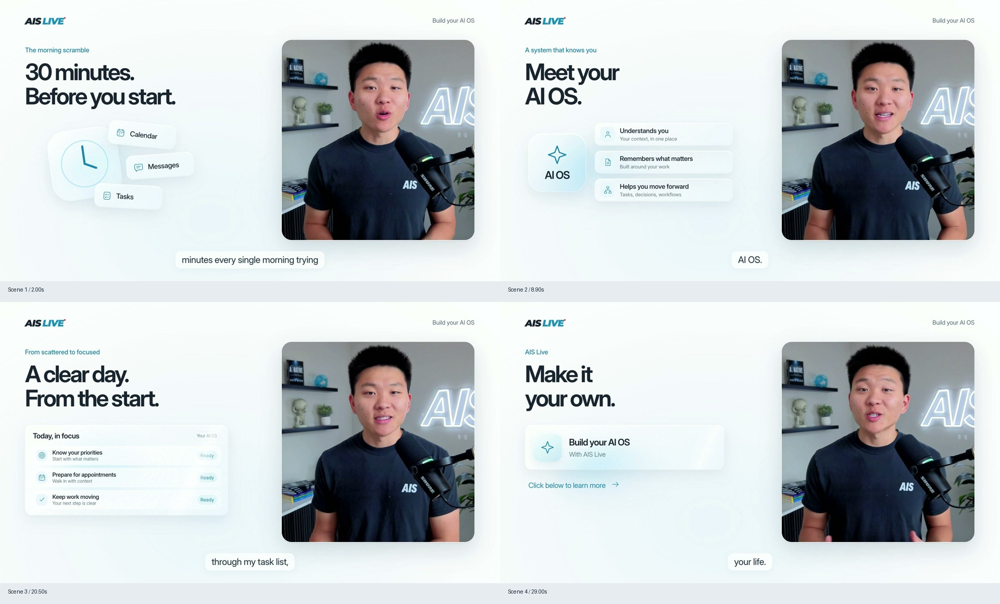
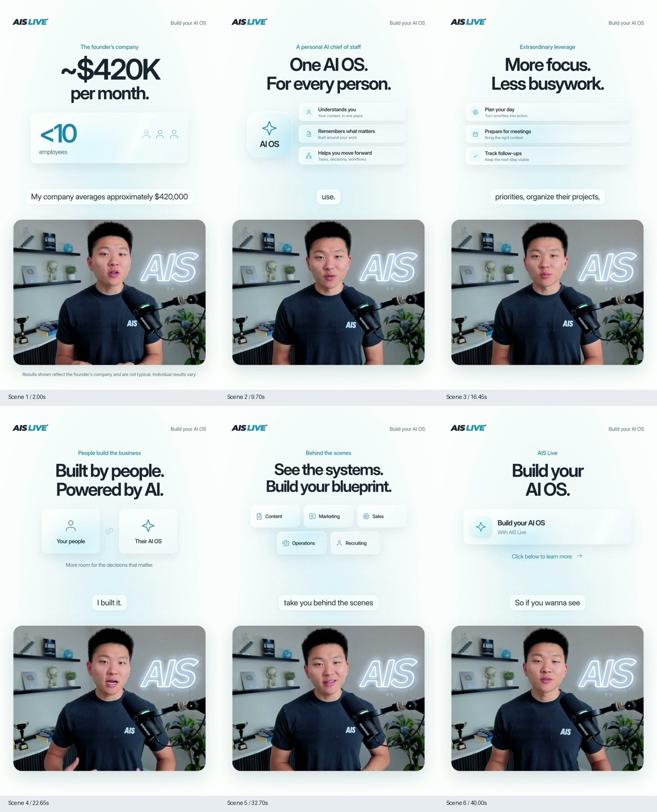
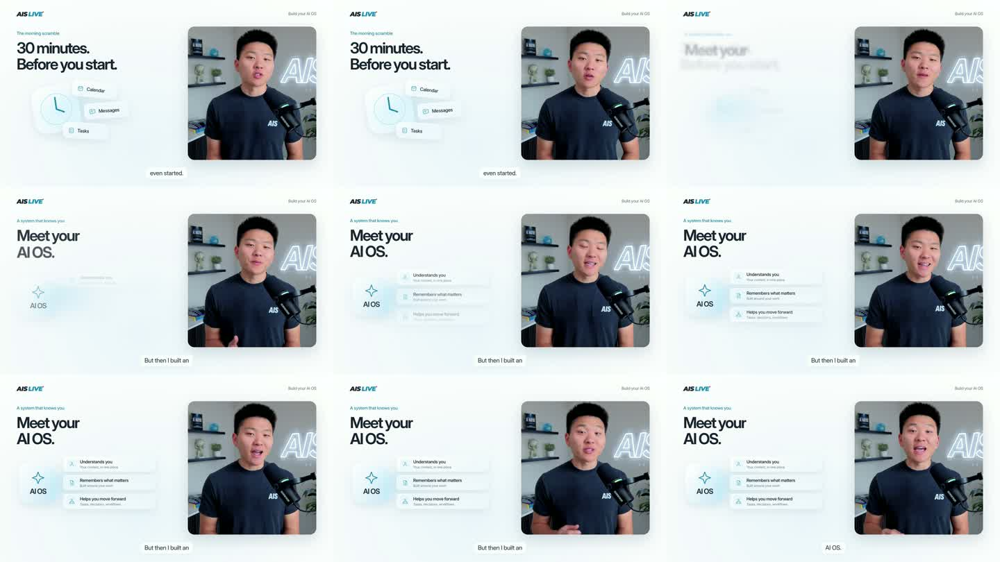

AIS / AIS+ · September 30, 2026
Checkpoint 1: intake & edit plan
Eight recordings acquired and transcribed. Proposed cuts, source timing, reusable core structure and ten planned exports are ready for review.
Checkpoint 1 approved. The dark-style samples are now ready in
Checkpoint 2. This intake plan is preserved as a reference.
18:14.74
total raw footage
10
planned MP4 + SRT pairs
Fri, Oct 2
EOD · Central Time
Confirmed choices & open content
Confirmed Styled burned-in V2 / White Glass captions, adapted to dark mode. Keep editable captions and synchronized SRTs. Annual display: $749/year + approximately $62.42/month.
Event frequency remains unanswered. Style proof and ad work can proceed after approval. The VSL’s event-frequency and savings passages must be resolved before final VSL sign-off. Preserve the existing recording in this proposed map so the unresolved copy remains visible.
Raw-source review player
Retake and chapter buttons below load the original recording at the named source position. This is an inspection player, not an edited preview.
Select a timestamp below, then press Play. External SSD must be connected.
One shared core, four assemblies
Generic entry: raw 1:12.42, “So this page is full of examples…” Use raw 1:12.18 with a short lead-in. In the proposed cleaned core this entry is 0:50.28, and its first word is 0:50.52. Never apply raw 1:12 to the edited core.
04, 05 and 06 use the full cleaned core. 07 enters at the proof marker so the repeated learning/support trap does not play twice. Each assembly stores its own intro and core source-to-version map. Caption offsets must use those maps after cut verification.
Join checks: 04/05 “But here’s the thing” → “So if you’re like most builders”; 06 “design is just one piece of the puzzle” → core opening; 07 “escape that trap” → proof bridge. Check sentence completeness, combined breath, mouth movement, loudness, and caption handoff on all four.
Core markers JSON
Visual assets
The most useful missing item is a real Scrollcraft before-and-after: two page links or an existing screen recording. For SOP and AI OS, the document/template itself is enough to begin selecting useful shots.
Searches covered local AIS projects and targeted Drive queries. Existing proof screenshots are candidates, not blanket validation of all spoken claims. No fabricated comments, testimonials or product screens are planned.
Adapt the approved White Glass system to dark mode
Preserve
- Inter typography, generous spacing and one main idea at a time.
- Rounded Nate window, layered glass cards and restrained AIS blue.
- Smooth eased entrances, gentle stagger, soft blur transitions and subtle depth.
- Consistent styled captions tied to the selected speech.
Adapt
- Deep charcoal / navy background, dark translucent surfaces, soft highlights and near-white text.
- Landscape: editorial graphics beside Nate. Portrait: centered graphics above, Nate below, separate caption safe area.
- Calmer VSL pacing; keep the speaker visible where a graphic adds little.
- AIS / AIS+ branding and current offer copy throughout.
Reference geometry: landscape uses a 744 × 773 speaker window at (1080,151), 96 px outer margins and captions around y=965. Portrait uses a 952 × 720 window at (64,1080), 64 px margins and captions around y=932. These are starting points; the next proof will check actual footage and mobile safe areas.
Reference code uses roughly 0.58 s entrances, 0.7 s card motion and 0.085 s stagger. Retain the smooth character, without old event bugs, red LIVE dots, ticket dates, giant italic headlines, grids or neon outlines.
Inspected approved references (existing work)
Landscape contact sheet

Portrait contact sheet

Existing motion sequence

The old event VSL was inspected as a secondary pacing/presentation reference. Facebook displayed an unavailable/template post rather than a usable video. The newer approved V2 system is the controlling style reference.
Ten-export checklist & production order
All ten remain planned. Every MP4 gets a matching synchronized SRT, while project caption data remains editable. Landscape and portrait ad layouts are authored separately.
- Checkpoint 1 — now: review source inventory, last-take selections, asset needs and unresolved content.
- Checkpoint 2 — after approval: 10–15 second dark proof in landscape and portrait using actual new footage, captions, headline, glass graphic and transition; one VSL offer/proof frame. Stop for style review.
- Checkpoint 3: finish SOP ad in both formats; review cuts, audio, captions, graphics and mobile readability.
- Checkpoint 4: finish AI OS and Scrollcraft ads in both formats; review four previews.
- Checkpoint 5: finish the reusable core and SOP-intro VSL; review full long-form pacing, proof and offer.
- Checkpoint 6: assemble the other three VSLs, verify joins and caption offsets, QA all ten exports, and create the delivery manifest.
Target sequence: Wednesday: intake review and style proof after approval. Thursday: ad checkpoints and VSL core assembly. Friday: core approval, remaining versions and full export QA. This target depends on review turnaround and required assets/content arriving in time.
Final QA includes complete decoding, audio/video sync, natural cuts, caption wording and coverage, contrast and safe areas, missing assets, black/frozen frames, correct takes, correct formats and all four VSL joins. Confirm the upload destination before external delivery.
Export plan JSON · Handoff / current status · Original staged brief